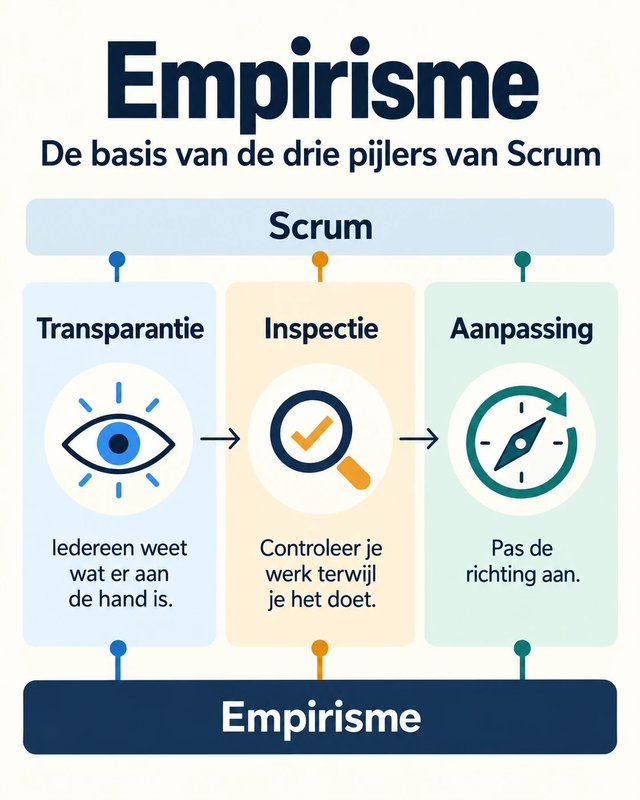

Transparantie, Inspectie & Aanpassing

Scrum is gebaseerd op een simpel idee: je leert het best door dingen te doen en te kijken wat er gebeurt. Dat heet empirisme. Je volgt niet blindelings een plan, maar kijkt steeds of wat je doet echt werkt. Drie principes brengen dat in de praktijk.
Elke pijler heeft de vorige nodig. Zonder transparantie valt er niets te inspecteren, en zonder inspectie weet je niet wat je moet aanpassen.
-
Transparantie
Iedereen ziet wat er gebeurt.
- We zijn eerlijk over hoe het werk vordert.
- We verbergen geen problemen.
-
Inspectie
We kijken regelmatig hoe het gaat.
- We checken vaak of we op de goede weg zijn.
- We vragen feedback, bijvoorbeeld aan de klant.
-
Aanpassing (Adaptatie)
We passen ons aan als dat nodig is.
- Werkt iets niet, dan veranderen we onze aanpak.
- We verbeteren continu hoe we werken.
Voorbeeld: een foto-app voor PXL
Je ontwikkelt voor PXL een app om foto's te delen. In plaats van maanden te plannen, ga je stap voor stap te werk. Welke pijler herken je in elke stap?
Zie je de cyclus? Zichtbaar maken, bekijken, aanpassen, en dan opnieuw. Scrum doet precies hetzelfde, maar in een vast ritme: elke dag en elke Sprint.
Hoe brengt Scrum deze cyclus in de praktijk? Doorloop eerst een volledige Sprint. Daarna zoek je zelf de drie pijlers in elk Scrum Event en test je jezelf.
Naar de Sprint →Een typische Sprint van 2 weken
Sprints zijn de hartslag van Scrum, waarin ideeën worden omgezet in waarde. De Scrum Guide kent vijf events: de Sprint zelf is de container, en daarbinnen geven vier events het ritme aan.
-
1. Sprint Planning
max. 8 uur
Het team plant wat het deze Sprint maakt en legt het Sprint Doel vast.
-
2. Daily Scrum
max. 15 minuten, elke dag
Kort afstemmen: voortgang, plan voor vandaag en obstakels.
-
3. Sprint Review
max. 4 uur
Het team toont wat er gemaakt werd aan de stakeholders.
-
4. Sprint Retrospective
max. 3 uur
Het team blikt terug: hoe kunnen we beter samenwerken?
De maximale duur (timebox) geldt voor een Sprint van een maand. Bij een kortere Sprint zijn de events meestal ook korter.
Doorloop de Sprint dag per dag
Klik op een dag in de kalender of gebruik Volgende. Alle dagen met een event tellen mee. Het weekend mag je overslaan.
Samengevat: de 5 Scrum Events
En in de praktijk? Refinement
De meeste teams plannen tijdens de Sprint ook Refinement sessies in. Refinement is géén officieel Scrum Event, maar het maakt de volgende Sprint Planning veel korter: de backlog items zijn dan al uitgewerkt, geschat en voorzien van acceptatiecriteria (“ready”).
Je bekijkt de officiële versie. Zet de schakelaar aan: de dagen die veranderen krijgen een paarse rand, je voortgang blijft bewaard.
Zit de cyclus van zichtbaar maken, bekijken en bijsturen in elk event? Zoek zelf Transparantie, Inspectie en Aanpassing in elk Scrum Event.
Naar Pijlers per Event →Vind de drie pijlers in elk event
Je kent nu de vijf Scrum Events. Kies per event bij elke activiteit welke pijler je herkent. Elke juiste keuze vult je overzichtstabel aan.
Je overzicht: 5 events, 3 pijlers
Je overzicht is compleet
Elk Scrum Event bevat alle drie de pijlers. Elk event maakt iets zichtbaar, bekijkt het kritisch en stuurt bij. Daarom noemen we Scrum een empirisch raamwerk. Deze tabel is meteen je samenvatting voor het examen.
Test jezelf: herken de pijlers in de praktijk
De pijlers zitten niet alleen in de events, maar ook in de hulpmiddelen en afspraken van het team. Lees elk scenario en beslis welke pijler je herkent.
Storypunten inschatten met Planning Poker
Bij Planning Poker schat het Scrum Team samen de omvang van User Stories in met kaarten uit de Fibonacci-reeks. Het gaat niet om exacte tijd, maar om een relatieve inschatting van hoeveelheid werk, complexiteit en onzekerheid.
Project: Campi, de campusapp voor PXL-studenten. Een team van vijf PXL-Digital studenten bouwt een app met het persoonlijke lesrooster, campusnieuws, een interactieve plattegrond en het dagmenu van PXL Catering. Jij schuift aan als zesde teamlid: kies bij elke story eerst zelf een kaart.
- Lees de story en de acceptatiecriteria.
- Stel vragen aan de Product Owner.
- Kies in stilte een kaart.
- Draai alle kaarten tegelijk om.
- De hoogste en laagste leggen uit.
- Kies samen een kaartwaarde, nooit een gemiddelde.
De kaarten: 1, 2, 3, 5, 8, 13, 20, 40 en 100. Een 20, 40 of 100 betekent vooral: deze story is te groot, splits hem op. De ?-kaart betekent: ik begrijp de story nog niet goed genoeg.
Wat heb je geleerd?
- Iedereen kiest in stilte een kaart, en alle kaarten gaan tegelijk om.
- Bij grote verschillen leggen de hoogste en laagste uit, daarna stemt het team eventueel opnieuw.
- Het team kiest altijd een kaartwaarde, nooit een gemiddelde.
- Een 20, 40 of 100 betekent opsplitsen, veel ?-kaarten betekenen eerst verduidelijken.
Jullie Product Backlog
De stories zijn ingeschat en de Sprint kan beginnen. Aan het einde van elke Sprint blikt het team terug. Hoe pak je zo'n Retrospective aan?
Naar Retrospectives →Retrospective Formats
Aan het einde van elke Sprint reflecteert het Scrum Team tijdens de Sprint Retrospective op hun manier van werken. Een goed format structureert het gesprek en zorgt dat het team met concrete verbeteringen naar de volgende Sprint gaat.
De drie formats hier zijn slechts voorbeelden: er bestaan tientallen retrospective formats, elk met een eigen opzet en invalshoek. Welk format je kiest hangt af van de nood van het team en de fase van het project.
Elke retrospective eindigt idealiter met een beperkt aantal concrete actiepunten. Liever 2 acties die het team zeker uitvoert dan een lange lijst die blijft liggen. Acties die sprint na sprint onuitgevoerd blijven, zijn trouwens zelf een bron van frustratie: ze komen gegarandeerd terug als post-it in de volgende retrospective.
Ontdek de 3 formats: 1 / 3 bekeken
Klik op de afbeelding of de knop om post-its te onthullen